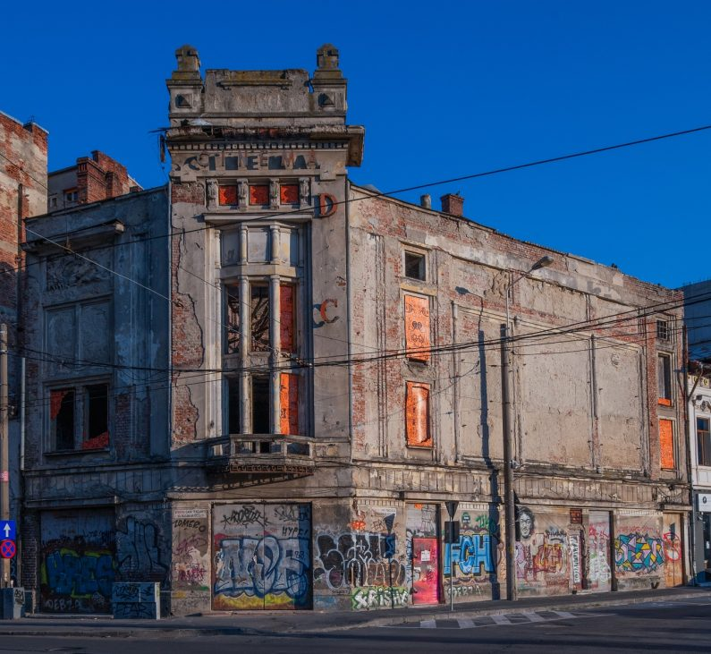

Cinematograful Marconi
Iluzia pierdută a Căii Griviței
Statut: Monument Istoric, Cod LMI B-II-m-B-18890
Situat pe artera istorică ce leagă inima orașului de Gara de Nord, vechiul Cinematograf Marconi stă astăzi mărturie a degradării spațiilor culturale interbelice. Fost pol de atracție pentru bucureșteni, clădirea este acum o umbră a perioadei sale de glorie.
Povestea clădirii:
Pășește înapoi în anii de aur ai Micului Paris, pe o stradă vibrantă, unde seara prindea viață sub lumina orbitoare a firmelor luminoase. Aici era locul în care realitatea se oprea la ușă. Domni la costum și doamne îmbrăcate după ultima modă așteptau cu nerăbdare să fie purtați în lumi fantastice, pline de romantism și aventură, pe marele ecran. Cinematograful era un veritabil palat al evadării, cu o atmosferă vibrantă, plină de zumzet și fascinație. Astăzi, ecranul este întunecat, iar liniștea a luat locul aplauzelor și suspinelor de odinioară. Cu toate acestea, silueta clădirii păstrează o eleganță melancolică. Sub praful anilor, spiritul vechiului cinema încă trăiește, invitând pe oricine trece pe lângă el să își imagineze spectacolul grandios care a fost odată.


Copyright: Alberto Grosescu